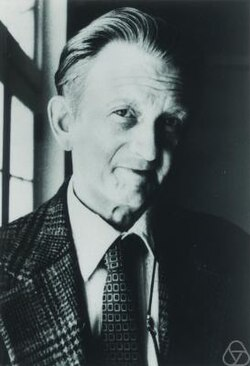

This article includes a list of general references but lacks sufficient corresponding inline citations. (January 2023) |
Atle Selberg | |
|---|---|
 | |
| Born | 14 June 1917 Langesund, Norway |
| Died | 6 August 2007 (aged 90) Princeton, New Jersey, United States |
| Citizenship | Norwegian |
| Alma mater | University of Oslo |
| Known for | Critical line theorem Local rigidity Parity problem Weakly symmetric space Chowla–Selberg formula Maass–Selberg relations Rankin–Selberg method Selberg class Selberg's conjecture Selberg's identity Selberg integral Selberg trace formula Selberg zeta function Selberg sieve |
| Spouse(s) | Hedvig Liebermann Betty Frances Compton |
| Awards | Abel Prize (honorary) (2002) Fields Medal (1950) Wolf Prize (1986) Gunnerus Medal (2002) |
| Scientific career | |
| Fields | Mathematics |
| Institutions | |
{kind=link}
Atle Selberg (14 June 1917 – 6 August 2007) was a Norwegian mathematician known for his work in analytic number theory and the theory of automorphic forms, and in particular for bringing them into relation with spectral theory. He was awarded the Fields Medal in 1950 and an honorary Abel Prize in 2002.
Early years
Selberg was born in Langesund, Norway, the son of teacher Anna Kristina Selberg and mathematician Ole Michael Ludvigsen Selberg. Two of his three brothers, Sigmund and Henrik, were also mathematicians. His other brother, Arne, was a professor of engineering.[2] While he was still at school, he was influenced by the work of Srinivasa Ramanujan and he found an exact analytical formula for the partition function as suggested by the works of Ramanujan; however, this result was first published by Hans Rademacher.
He studied at the University of Oslo and completed his doctorate in 1943.[2]
World War II
During World War II, Selberg worked in isolation due to the German occupation of Norway. After the war, his accomplishments became known, including a proof that a positive proportion of the zeros of the Riemann zeta function lie on the line .[3]
During the war, he fought against the German invasion of Norway, and was imprisoned several times.
Post-war in Norway
After the war, he turned to sieve theory, a previously neglected topic which Selberg's work brought into prominence. In a 1947 paper he introduced the Selberg sieve, a method well adapted in particular to providing auxiliary upper bounds, and which contributed to Chen's theorem, among other important results.
In 1948, Selberg submitted two papers in Annals of Mathematics in which he proved by elementary means the theorems for primes in arithmetic progression and the density of primes.[4][5] This challenged the widely held view of his time that certain theorems are only obtainable with the advanced methods of complex analysis. Both results were based on his work on the asymptotic formula
where
for primes . He established this result by elementary means in March 1948, and by July of that year, Selberg and Paul Erdős each obtained elementary proofs of the prime number theorem, both using the asymptotic formula above as a starting point.[6] Circumstances leading up to the proofs, as well as publication disagreements, led to a bitter dispute between the two mathematicians.[7][2]
For his fundamental accomplishments during the 1940s, Selberg received the 1950 Fields Medal.[8]
Institute for Advanced Study
C.L. Siegel invited Selberg to visit the Institute for Advanced Study in Princeton, New Jersey in 1947. He moved to the United States and was an associate professor at Syracuse University briefly. He returned to the IAS in 1949, where he remained until his death.[1][9] During the 1950s, he worked on introducing spectral theory into number theory, culminating in his development of the Selberg trace formula, the most famous and influential of his results. In its simplest form, this establishes a duality between the lengths of closed geodesics on a compact Riemann surface and the eigenvalues of the Laplacian, which is analogous to the duality between the prime numbers and the zeros of the zeta function.
He generally worked alone. His only coauthor was Sarvadaman Chowla.[10][11]
Selberg was awarded the 1986 Wolf Prize in Mathematics. He was also awarded an honorary Abel Prize in 2002, its founding year, before the awarding of the regular prizes began.
Selberg received many distinctions for his work, in addition to the Fields Medal, the Wolf Prize[12] and the Gunnerus Medal. He was elected to the Norwegian Academy of Science and Letters, the Royal Danish Academy of Sciences and Letters and the American Academy of Arts and Sciences.
In 1972, he was awarded an honorary degree, doctor philos. honoris causa, at the Norwegian Institute of Technology, later part of Norwegian University of Science and Technology.[13]
His first wife, Hedvig Liebermann, who Selberg married in 1947, died in 1995. With her, Selberg had two children: Ingrid Selberg (married to playwright Mustapha Matura) and Lars Selberg. In 2003, Atle Selberg married Betty Frances "Mickey" Compton (born in 1929).
He died at home in Princeton, New Jersey on 6 August 2007 of heart failure. Upon his death, he was survived by his widow, daughter, son, and four grandchildren.[14]
Selected publications
- Selberg, Atle (1940). "Bemerkungen über eine Dirichletsche Reihe, die mit der Theorie der Modulformen nahe verbunden ist". Archiv for Mathematik og Naturvidenskab. 43 (4): 47–50. JFM 66.0377.01. MR 0002626. Zbl 0023.22201.
- Selberg, Atle (1942). "On the zeros of Riemann's zeta-function". Skrifter Utgitt av Det Norske Videnskaps-Akademi I Oslo. I. Mat.-Naturv. Klasse. 10: 1–59. MR 0010712. Zbl 0028.11101.
- Selberg, Atle (1943). "On the normal density of primes in small intervals, and the difference between consecutive primes". Archiv for Mathematik og Naturvidenskab. 47 (6): 87–105. MR 0012624. Zbl 0028.34802.
- Selberg, Atle (1944). "Bemerkninger om et multiplet integral". Norsk Matematisk Tidsskrift. 26: 71–78. MR 0018287. Zbl 0063.06870.
- Selberg, Atle (1946). "Contributions to the theory of the Riemann zeta-function". Archiv for Mathematik og Naturvidenskab. 48 (5): 89–155. MR 0020594. Zbl 0061.08402.
- Selberg, Atle (1949). "An elementary proof of the prime-number theorem". Annals of Mathematics. Second Series. 50 (2): 305–313. doi:10.2307/1969455. JSTOR 1969455. MR 0029410. Zbl 0036.30604.
- Selberg, Atle (1954). "Note on a paper by L. G. Sathe". Journal of the Indian Mathematical Society. New Series. 18 (1): 83–87. MR 0067143. Zbl 0057.28502.
- Selberg, A. (1956). "Harmonic analysis and discontinuous groups in weakly symmetric Riemannian spaces with applications to Dirichlet series". Journal of the Indian Mathematical Society. New Series. 20 (1–3): 47–87. MR 0088511. Zbl 0072.08201.
- Selberg, Atle (1960). "On discontinuous groups in higher-dimensional symmetric spaces". Contributions to Function Theory. Bombay: Tata Institute of Fundamental Research. pp. 147–164. MR 0130324. Zbl 0201.36603.
- Selberg, Atle (1965). "On the estimation of Fourier coefficients of modular forms". In Whiteman, Albert L. (ed.). Theory of Numbers. Proceedings of Symposia in Pure Mathematics. Vol. VIII. Providence, RI: American Mathematical Society. pp. 1–15. doi:10.1090/pspum/008/0182610. MR 0182610. Zbl 0142.33903.
- Selberg, Atle; Chowla, S. (1967). "On Epstein's zeta-function". Journal für die Reine und Angewandte Mathematik. 227: 86–110. doi:10.1515/crll.1967.227.86. MR 0215797. Zbl 0166.05204.
- Selberg, Atle (1992). "Old and new conjectures and results about a class of Dirichlet series". In Bombieri, E.; Perelli, A.; Salerno, S.; Zannier, U. (eds.). Proceedings of the Amalfi Conference on Analytic Number Theory. Salerno: Università di Salerno. pp. 367–385. MR 1220477. Zbl 0787.11037.
Selberg's collected works were published in two volumes. The first volume contains 41 articles, and the second volume contains three additional articles, in addition to Selberg's lectures on sieves.
- Selberg, Atle (1989). Collected Papers. Volume I. Berlin, Heidelberg: Springer-Verlag. ISBN 3-540-18389-2. MR 1117906. Zbl 0675.10001. Selberg, Atle (28 July 2014). 2014 pbk edition. Springer. ISBN 9783642410215.[15] Description at M.I.T. Press Bookstore
- Selberg, Atle (1991). Collected Papers. Volume II. Berlin, Heidelberg: Springer-Verlag. ISBN 3-540-50626-8. MR 1295844. Zbl 0729.11001. Description at M.I.T. Press Bookstore
References
- ^ a b Ferrara, Christine (9 August 2007). "Atle Selberg 1917–2007". Institute for Advanced Study (Press release). Retrieved 14 October 2020.
- ^ a b c Baas, Nils A.; Skau, Christian F. (2008). "The lord of the numbers, Atle Selberg. On his life and mathematics" (PDF). Bull. Amer. Math. Soc. 45 (4): 617–649. doi:10.1090/S0273-0979-08-01223-8. Archived (PDF) from the original on 9 October 2022.
- ^ Selberg 1942.
- ^ Selberg, Atle (April 1949). "An Elementary Proof of the Prime-Number Theorem" (PDF). Annals of Mathematics. 50 (2): 305–313. doi:10.2307/1969455. JSTOR 1969455. S2CID 124153092. Archived (PDF) from the original on 9 October 2022.
- ^ Selbert, Atle (April 1949). "An Elementary Proof of Dirichlet's Theorem About Primes in Arithmetic Progression". Annals of Mathematics. 50 (2): 297–304. doi:10.2307/1969454. JSTOR 1969454.
- ^ Spencer, Joel; Graham, Ronald (2009). "The Elementary Proof of the Prime Number Theorem" (PDF). The Mathematical Intelligencer. 31 (3): 18–23. doi:10.1007/s00283-009-9063-9. S2CID 15408261. Archived (PDF) from the original on 9 October 2022.
- ^ Goldfeld, Dorian (2003). "The Elementary Proof of the Prime Number Theorem: an Historical Perspective" (PDF). Number Theory: New York Seminar: 179–192. Archived (PDF) from the original on 9 October 2022.
- ^ "Fields Medals 1950". International Mathematical Union (IMU). Retrieved 26 March 2025.
- ^ Maugh II, Thomas H. (22 August 2007). "Atle Selberg, 90; Researcher 'Left a Profound Imprint on the World of Mathematics'". Los Angeles Times. Retrieved 14 October 2020.
- ^ Chowla, S.; Selberg, A. (1949). "On Epstein's Zeta Function (I)". Proceedings of the National Academy of Sciences. 35 (7): 371–374. Bibcode:1949PNAS...35..371C. doi:10.1073/pnas.35.7.371. PMC 1063041. PMID 16588908.
- ^ Conrey, Brian (12 March 2020). "Math Encounters - Primes and Zeros: A Million-Dollar Mystery". National Museum of Mathematics, YouTube. (See 58:30 of 1:18:02 in video.)
- ^ "Atle Selberg portrait on the occasion of receiving the Wolf Foundation Prize in Mathematics". albert.ias.edu. 16 March 2023. Retrieved 26 March 2025.
- ^ "Honorary Doctors". Norwegian University of Science and Technology.
- ^ Pearce, Jeremy (17 August 2007). "Atle Selberg, 90, Lauded Mathematician, Dies". The New York Times.
- ^ Berg, Michael (7 October 2014). "review of Collected Papers I: Atle Helberg". MAA Reviews, Mathematical Association of America (MAA).
Further reading
- Albers, Donald J. and Alexanderson, Gerald L. (2011), Fascinating Mathematical People: interviews and memoirs, "Atle Selberg", pp 254–73, Princeton University Press, ISBN 978-0-691-14829-8.
- Baas, Nils A.; Skau, Christian F. (2008). "The lord of the numbers, Atle Selberg. On his life and mathematics". Bull. Amer. Math. Soc. 45 (4): 617–649. doi:10.1090/S0273-0979-08-01223-8. Interview with Selberg
- Hejhal, Dennis (June–July 2009). "Remembering Atle Selberg, 1917–2007" (PDF). Notices of the American Mathematical Society. 56 (6): 692–710.
- Selberg (1996). "Reflections Around the Ramanujan Centenary" (PDF). Resonance. 1 (12): 81–91. doi:10.1007/BF02838915. S2CID 120285506. Archived (PDF) from the original on 9 October 2022.
External links
- Atle Selberg at the Mathematics Genealogy Project
- O'Connor, John J.; Robertson, Edmund F., "Atle Selberg", MacTutor History of Mathematics Archive, University of St Andrews
- Atle Selberg archive webpage
- Obituary at Institute for Advanced Study
- Obituary in The Times
- Atle Selbergs private archive exists at NTNU University Library